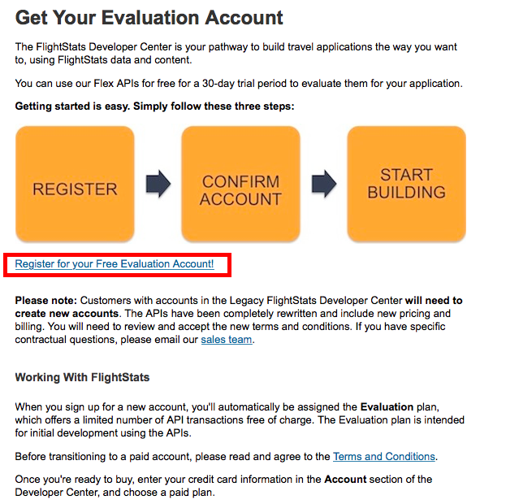

API Keys
How to get your API key from FlightStats.com
What is an API key?
API keys are unique identifiers that allow the service providers to monitor usage levels and maintain some control over their original content. Without an identifying key, data services could be abused and/or terms and conditions violated.
Requesting a FlightStats API key
To gain access to FlightStats services, you must first request an API key from their website.

After completing the short form for an evaluation account, FlightStats will review and approve the account within a day or so and then provide a unique API Key and APP ID. This level of account is provided free of charge for initial evaluation purposes and is limited to a maximum of 20,000 total requests. FlightStats offers several levels of premium accounts as a paid service.
The API key request will actually generate two unique keys, one is the "APIKey" and the other is the "AppID". Both of these are needed to use the service.